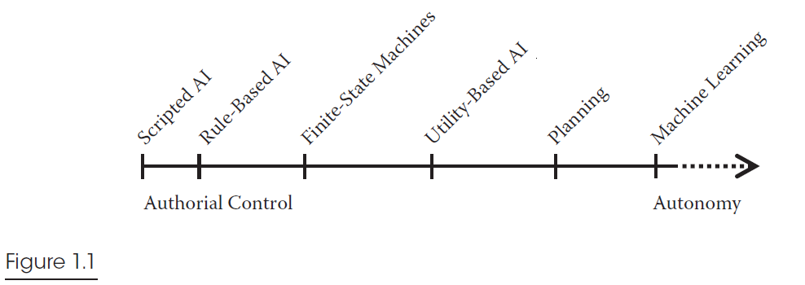
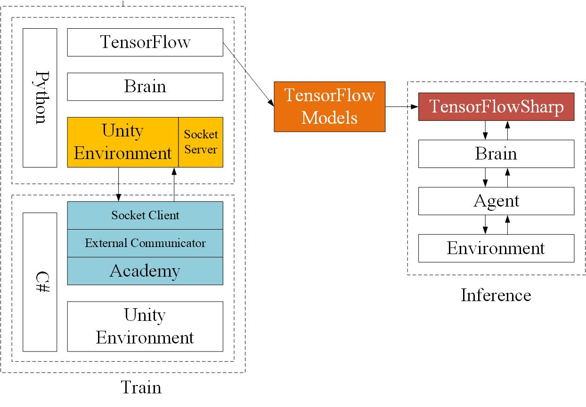
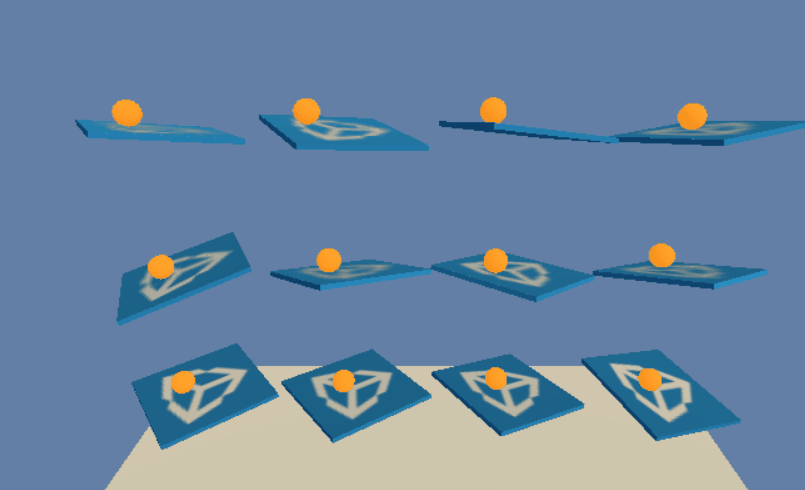

具有学习能力的 AI，从刚开始的科幻电影中的幻想开始渐渐由于技术转变为现实，但如今应用场合还很有限。最近正好看到一个相关课程《机器学习驱动的游戏 AI 技术》，今天就来研究下在游戏场景下的应用。（不过我 unity 学的不多┭┮﹏┭┮，主要还是了解下其中的思想）
# 1. 机器学习
文章中有幅图非常好地描述了几种 AI 的定位。

图中对应的分别是：脚本 AI、基于规则 AI、有限状态机、基于效用 AI、计划、机器学习。图中，越往左，人工指定策略的因素越多，越往右，AI 自主性越强。当前游戏市场中的游戏最主要的 AI 形式应该是有限状态机，而机器学习的 AI 投入市场使用的非常少，我所了解的，基本都是处于实验状态，目前以 moba 游戏居多。
目前的有限状态机的 AI，在 MMORPG 这种以数值养成为主的游戏中虽然比较适用，而且通过设计，可以给策划提供配置的接口，但是在一些竞技性比较强，影响因素较多、较复杂时，如 MOBA，RTS，ACT 游戏，会十分依赖工程师的技术，开发和维护成本会很大。这种情况下，机器学习 AI 就能体现出他的优势了。
# 2.Unity ML-Agent
文中主要介绍的机器学习框架是 Unity ML-Agent。Unity ML-Agent 内置了优秀的 PPO（Proximal Policy Optimization）策略优化算法，所以我们只需要考虑好自己的神经网络模型结构就可以了。
Unity ML-Agent 的机器学习的底层实现还是经典到不能再经典的 TensorFlow，实现架构如下图：

可以看到主要是通过 socket 通信实现的。训练阶段，Unity 作为 Client 将训练数据通过 Socket 发送至 TensorFlow，TensorFlow 将训练好的模型保存，通过 TensorFlowSharp 将模型用于 Brain，来知道 Agent 与环境交互。
# 3. 案例
文中介绍了几个官方案例，我学艺不精，就拿最简单的一个案例，来展示下他的思想～
平衡球学习的目标是让一个球体保持平衡在平台中间。

//20 行 这里是设置 AI 的观察输入，其中引入了对球速度的观测 | |
AddVectorObs(ball.transform.position - gameObject.transform.position); | |
AddVectorObs(ballRb.velocity); | |
//45 行 这里是对 AI 的动作结果进行反馈，出板和掉落都是减 1 分，并且重制场景 | |
if ((ball.transform.position.y - gameObject.transform.position.y) < -2f || | |
Mathf.Abs(ball.transform.position.x - gameObject.transform.position.x) > 3f || | |
Mathf.Abs(ball.transform.position.z - gameObject.transform.position.z) > 3f) | |
{ | |
Done(); | |
SetReward(-1f); | |
} |
可以看到，机器学习核心思想是 “反馈”。只有通过较为正确的反馈，才能使机器不断在训练中进步。
# 4. 总结
作者除了原理和案例外，还做了一次对一个 unity 经典项目坦克大战的机器学习实现 AI 的时间。由于我对 unity 的熟悉程度还不足，没法很好完成实践，下次好好实践完再记录～～